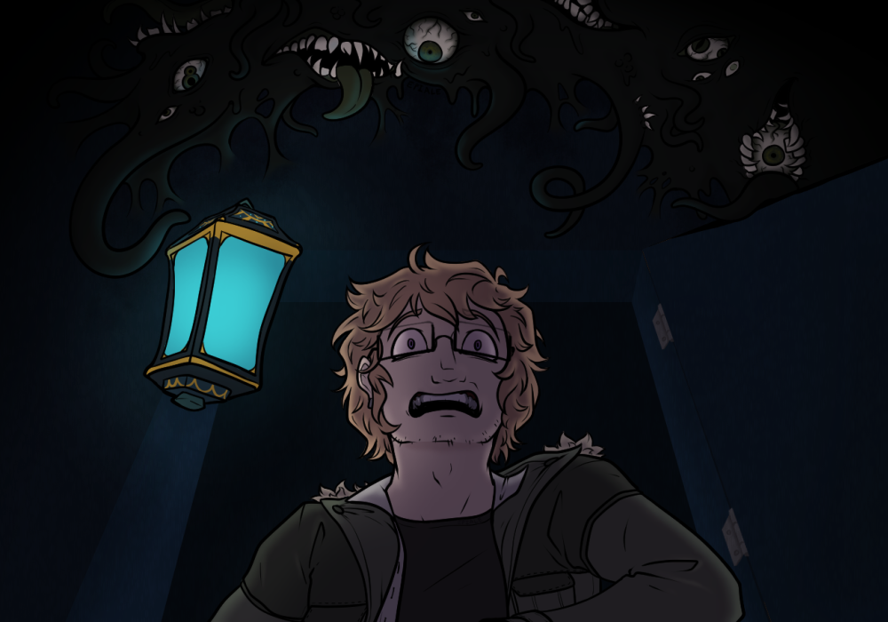

Mal had found out. He found out because she had opened her mouth to that stupid purple cloaked girl. Fran hadn't been planning to hide her pregnancy, she just wanted to announce it at home. And now she was still in this stupid fucking terminal.
The ones on the outside must've been a part of this set up seeing as they haven't done jack to get them out. Hastur loved to pull that shit too.
Fran wanted to puke, unsure if it was from the pregnancy or from what she was going to do. The symbols were burned into her memory, after all she was the avatar, the King in Yellow. Her own blood would do for now, but it wouldn't be enough. A sacrifice would have to be made, but there were plenty of people here. Surely one of them would be dumb enough to-
There was the creak of the door opening.
Fran held still, on her hands and knees, praying whoever wouldn't come in. It was too early, she needed time to properly set up the circle, to double check her work. Boots clunked against the floor and Fran spotted a cyan glow.
“Hey! You're that shoplifter, you-”
Claws were out in a flash as Fran leaped at the ghost. She would have to flee, find a better location. But her claws shifted, glowing a
soft gold
, and made an impact knocking the ghost to the ground. Before either of them could wonder why, her teeth sank into his neck. She pulled away, ripping away flesh that disappeared in the air and left the man under her twitching for a few moments before laying still.blood
ran across the floor, mingling with her own, following the symbols she had created.
Fran had been missing for several hours now, and to say Mal was stressed about it would have been an understatement.
Really the entire situation was stressful, and while he was doing his best to hold it together anxiety was starting to chew away at the edges of his mind. They were stuck, and while they’d been lucky so far running into a friendly shade, and escaping the danger that had cropped up, this place was clearly far from safe. Some of the fake ghosts had shown to be hostile, and he didn’t trust a good number of the people who’d been trapped in with them. Even beyond that there was no telling if the structure itself could pose a threat.
If he were by himself, if it was only his own life at risk, well, he’d deal with it, but he needed to get Fran out, and sooner rather than later. She was clearly not taking the confinement well, understandably haunted by being trapped for so long on that wretched island, and Mal’s own cruel memory was screaming in the back of his mind a near constant warning that he was going to lose Fran like he had so many others if he couldn’t find a way to fix this.
Physically losing track of her wasn’t helping. ‘What will it be this time,’ his own thoughts raced, ‘another accident? No cars here, and no time for cancer, but there’s plenty that could go wrong. She could still be shot by someone, gunned down before you could even try to stop it. Maybe it’ll be something new; an old hallway could collapse, some long forgotten disease lurking in the building, a complication from the pregnancy-’
That was another thing to worry about. They hadn’t even had much of a chance to discuss it, interrupted when they’d tried earlier. They should be at home, calling Brian back to talk about things, getting her to a doctor, or at least getting her to sit down so he could examine her if there was a risk it wasn’t human, and instead they were trapped in this stupid giant ancient building full of the most annoying fake ghosts he’d ever seen.
The medically minded part of his brain wanted to latch onto her condition as something he could at least try to help. Medicine was the one great talent he had, something he was good at, but he admittedly wasn’t an expert in obstetrics specifically, and he could hardly do anything with next to zero information, and a missing Fran. He knew the basics, had read on the subject passively over the years as a natural consequence of wanting to fully understand the human body, but finer details of prenatal care, or the steps taken to deal with it if she decided she wanted to take another course were beyond him. Swinging by the library here to see if they had any supplementary texts on the subject might be useful to fill in the gaps in his own knowledge, he could run by the medical facilities to steal equipment for a proper exam, but finding Fran was his first priority. She was strong, wonderfully so, but he still couldn’t stand the thought of her wandering this labyrinth alone.
Unfortunately he didn’t have the faintest clue where she could have gone.
He had taken to wandering the main halls near where they’d settled in, hoping he could maybe hear something, or find any trace of where she’d been. He perked up considerably when he caught the faint echo of footsteps, following the sound around a corner, and was disappointed to see one of the other poor bastards they’d gotten stuck with walking along the corridor alone.
The man looked shaken, clothes unsettled in a way that led Mal to believe he’d had a considerably worse time dealing with the dangers here than he and Fran had. Mal couldn’t find it in himself to care.
“Excuse me,” he called down the hall, “Have you seen anyone come through here? Specifically a woman, black hair, cat earrings-”
The stranger looked his way, confused a moment before shaking his head, “Oh, no, sorry, haven’t seen anyone like that.” He seemed to think for a moment. “I think I remember seeing you before in the lobby, you’re looking for the woman you came here with, right?”
Mal didn’t remember this man at all, but he hardly remembered anyone here. Among dragons and people with dog heads, a blond white guy just hadn’t stood out much.
He nodded, “Yes. She’s my girlfriend. I guess she wondered off. I’d like to find her before any more of the ‘spirits’ do.” He held his fingers up in air quotes at ‘spirits’, frustrated enough at the situation to be overtly contemptuous of the entire thing. Stupid fake ghosts, stupid big labyrinthine building-
The man grimaced, “Oh yeah, definitely understand that. This place is dangerous. I could help look for her- I’m Kasper, by the way.” He tried to offer a friendly smile that still managed to look visibly strained.
Mal didn’t blame him. This place sucked, and the slightly burnt coat the man wore said pretty plainly he had not had a good time. “Mal. And you’re welcome to if you want. I’m not sure where to look if I’m being honest.”
Kasper looked up and down the corridor they were in, “Well, I came from that way, and I really doubt she’s back there, and you’ve already searched that way.” He pointed to a hallway a bit further away, “We should probably check where neither of us have been, before trying any of the further parts of the terminal.”
That made sense, and Mal nodded, turning towards the hallway Kasper had pointed out. It was modest, a bit darker than the rest of the area, lights a bit faulty even with the power on. He glanced at a sign on the wall, marking it as an employee shortcut to the teleporters.
Kasper joined him as they both started down the hall, Mal reluctantly slowing his pace to match. Most people didn’t appreciate the power-walking everywhere. The lantern that obediently floated alongside Kasper was helpful, lighting the dim halls as they went.
“What happened to you, if you don’t mind me asking?” Mal spoke up, nodding towards Kasper’s coat.
Kasper looked down, grimaced, “Oh, uh, got caught up in an explosion. There was this ghost shark and...”
Mal frowned. So there were more dangers here than he already knew about. Great. He tried to pull his thoughts away from spiraling again, as Kasper explained his ordeal with the gas leak, and his investigation with Curie and Ester. It wasn’t helping.
“If you’re injured at all I could try to help. I only have a small medical kit on me, but it would be enough to at least clean any burns, and stave off infection.” Mal offered, pulling the conversation to a topic he could control.
Kasper perked up, “I’m fine, really.” He offered a thumbs up, and a reassuring smile that only faltered the slightest bit at Mal’s utter lack of response or expression. “So, uh, what brought you into the terminal?”
“A flier. Ultimately Fran and I accepted the job offer as a bit of a vacation. She wanted to prove to me that ghosts were real.” He frowned, “It was meant to be something fun. Not… this.”
Kasper nodded, understanding, “I was looking into a mystery with my friends when I got isekai’d here.”
“Isekai’d?”
“You know, like in anime. Where the main character from the real world is suddenly transported to another one? Like Samurai Jack or Spirited Away.”
“Wizard of Oz.”
Kasper paused then laughed, “Yeah, I guess that would count too. God, it's nice knowing there's someone else here from my world.”
They continued to explore the portal bay. It was full of wide hallways with now dead alcoves that hosted the portals. Occasionally a ghost would enter an alcove with a cyan flash, only to show up again where they began.
“I thought there would have been more damage.” Kasper commented, picking up a large ticket from the floor.
Mal nodded “I’ve seen a portal before, and it was a lot more alive.”
“Wait, you’ve seen portals before?”
“Just one, long story.” Mal shrugged.
“What was it like? It might help us here.” Kasper urged.
Mal really didn’t want to explain, not now when he was still trying to find Fran. “It was larger than these, and was powered by five people who were in a medically induced coma, but they had tanks over their heads.” Mal gestured a rough cylinder shape around his face. “Whatever liquid was in there was slowly dissolving their flesh. Honestly, I’d like to know more, but the woman who set up the whole thing is dead.”
“Oh, that's awful!” Kasper recoiled, a squeamish smile still on his face. “I’d definitely need to see Trinket after that.”
“Who?”
“How have you not seen it?” Kasper laughed softly, “I was joking with Doe, the girl with the dog, that it would make a marketable plushy, before…”
Kasper didn’t need to finish, Mal knew that he meant before the Entity stole half their group again.
“It’s this AI mascot you can talk to for therapy. There’s a few booths, want to see?”
“Sure.” Fran didn’t seem to be here anyways.
Their footsteps echoed loudly down the hall as Kasper led them towards a large waiting area. Mal was reminded of an airport, with its various stores and cafes dotted around, and the bustling ghosts forever in transit. While Mal just walked through the apparitions, Kasper still tried to politely step out of their way, making extra sure that his lantern floated well out of range as they headed towards a tucked away corner.
“Here, isn’t he cute?”
Mal smiled at the dragon mascot happily proclaiming ‘Staff Only Wellness Booth’ in a speech bubble above its head. “It’s pretty cute for what’s likely a personal data stealing system.”
“Oh yeah, my group would always talk about how unsafe AI is with personal data. Did you hear about the guy who had his car hacked?”
Mal nodded, “And the one with the ‘smart’ lock on his front door.”
The wellness booth door opened and strong, clawed hands grabbed Mal, pulling him into the booth.
“I need to talk to him.”
The door shut, locking itself and Kasper out.
Had Mal not been pulled down by these hands with this force many times before, he would’ve pulled out his scalpel, and begun an immediate assault. But with the brief pause he recognised the face of his girlfriend. Her green eyes were bloodshot, and her hands trembled.
“I did it, it works…”
“Fran…”
Fran shook her head “It works! We can get out of here!”
“Frances, wait- What works?” He gently grabbed her shoulders, guided her to sit, “Look, you need to be gentle with yourself. I know we haven’t really discussed what you uh, what you want to do yet, but just for your own health-”
God, Mal was using her full name. There was no avoiding this.
“Look, I want to keep it… them.” Fran stated before Mal could ask. “But only if they are normal… like, human normal.”
Mal nodded, “That makes sense. What are your symptoms? Have you taken a test?”
“Yeah, it didn't come out… normal. But I've been sick, and we haven't exactly been careful. Not hard to put two and two together.” She looked down, “I was convinced none of us could have kids. But maybe when Brian and I broke our connection to Hastur it changed that.”
Mal put a hand on Fran’s thigh and squeezed. She had chosen to wear sweatpants today, hung low on her hips to allow for a tail. As Mal’s thumb stroked the fabric, he felt the edge of a loosely wrapped bandage, and Fran recoiling ever so slightly.
“Fran.”
“It's nothing, I don't want you to worry.”
“I'm going to worry now. At least let me put the bandage on right.”
Fran sighed, there was no point hiding it. “The knife was clean when it happened.” She explained, pulling down her sweat pants, careful to avoid the injury, “I thought it would heal fine on its own.”
The wound was fresh and deep. A raw red line across her inner thigh that still oozed blood. Fran was lucky it didn't cut anything major.
Mal kept his hands steady with practiced ease, but as he gazed down at the cut he was a storm of anger. A flurry of new eyes shot open across the side of his face, a new mouth ripping open along what was visible of his throat, skin mottling in putrid black. He’d hardly even noticed his eldritch form slipping loose as he looked up from the wound to meet Fran’s eyes.
“Mal?”
“Who did this?”
Fran paused. “I did.”
His anger melted into a mix of sympathy and sadness. “Babe.”
“It was for something dangerous and… well it worked, so, who cares if I’m bleeding a bit.”
“Why didn't you tell me? I'm here to help you, especially if it's dangerous.”
Fran sniffed, rubbing at her eyes, “Damnit, Babe.” She smiled at him. He pulled her into a hug, nuzzling against the side of her face. When he pulled back he looked marginally less upset, extra eyes slowly closing and melting back to skin, his form stabilizing back to human.
Mal turned his gaze back down to her leg, and the wound there, as he moved to pull out the small first aid kit he kept in his pocket. It wasn’t much, but it was better than nothing. He could work with it. He had to.
He could fix this. He wouldn’t let it happen again.
“Sorry, I wanted Mal to hear the weird recordings that Neopets rip off was saying.” Fran lied easily, waving a hand towards the booth.
“Oh, I’m glad you two are okay, you made me worried.” Kasper smiled, pushing off from where he’d settled leaning against the side of the booth, “What recordings?”
Mal shrugged, looking towards Fran to take the lead.
“Evacuations, codes… Honestly I’ve learned the less you know about these huge mysteries the more you can keep sane.” She turned to the booth “But be my guest if you are good at that shit, little guy will just say it if it thinks you are talking to him.”
Kasper nodded, opening the door when he noticed the couple begin to walk away.
“Meet up later to share notes?”
Mal glanced back and nodded.
Tables and chairs had been haphazardly pushed towards the walls. Jigsaw pieces strewn from a half done puzzle littered the floor from a knocked over table, a book from another, and various mugs lay shattered on the floor. Fran knelt and grabbed a rug in the middle of the room, pulling it aside.
“It's my blood that directs the ritual.” Fran explained. She tried to keep it simple for Mal, Eldritch knowledge did things to people, and as much as he’d been okay so far she didn’t feel like testing it. “Since
Cats of Saturn
are from the Dreamlands which itself is formed by other’s imagination, that means my blood has a sort of ethereal quality, magically speaking.”Saturn's Dreamlands.
You… you think your goo form would be okay in space?”
Kasper was looking over the teleporters. They were… a lot more corporate than he expected of magical portals. He’d kind of hoped they’d be more mystical, and less lined in propaganda posters.
A spark of something moving nearby caught his attention. Well, something other than a nearby ghost that appeared to be stuck in a loop entering a nearby portal gate. He followed the movement around a corner and found himself looking at… himself.
Before him was a vision of himself talking to Mal. There was no sound, but he could get the gist from body language that the other Kasper was being asked to follow somewhere.
“Hello?” Kasper called out. He received no reaction, the figures not acknowledging him or anything else nearby. There was a blink and they were rounding a corner out of sight. Kasper followed.
He tried to keep up, but the visions only appeared as brief glimpses ahead, guiding him somewhere deeper into the employee areas of the terminal. He took some comfort in the lantern being close as the halls grew darker. It felt like he was walking into something he shouldn’t, but curiosity drove him forward, the light thrill of a bit of danger.
He found himself in front of an employee break room door, and reached for the handle. His heart rate quickened, some animal instinct screaming danger, but he rationalized that it was just the setting, the mystery of it all. Besides, it was just a vision of himself and Mal he was following. He’d talked to the guy, and he seemed a bit odd, but mostly fine-
He pushed the door open to a scene of his double being stabbed in the throat.
Kasper froze in place, blood running cold. There was a wet click of teeth above him, and when he looked up everything shattered.

He found himself staring into a black mass of teeth, tentacles, and sickly green eyes. He turned on his heel to run, slipping in his panic.
Tentacles shot forward in a flash to drag him back.
He kicked free of a tentacle around his ankle.
He was in the grasp of a monster, dragging him further into the room, arms pinned too solidly against his sides to fight back.
He was in the hallway, scrambling to get away. The lantern burst with a flash of light as the thought crossed his mind it might help blind the beast trying to capture him. It froze long enough, blinking in confusion, for Kasper to get to his feet.
He was in its grasp, in the room, and as his eyes adjusted to the dark he realized that this… thing was Mal, the small remaining human part of him now visible from where he was being dangled into the air, and he could see Fran nearby.
He was upside down, hot and cold. Thick blood, his blood, flowing out of him in spurts.
Danger,
death.
He was upright, running down the hallway of the Terminal.
“Here, drink this.” Cain set a warm cup of tea on the side table then sat down in a plush chair near Kasper.
The blonde man removed the cigarette from his lips with a still shaking hand, looking for an ashtray.
“Just use the table, TITAN can cover it.”
The cigarette was put out and replaced with the teacup. The warmth from the milk seeped into Kasper’s fingers and the smell of maple and cinnamon gently wafted above the surface. His eyes closed as he took a sip, focusing on the earthy flavor.
“So, not trying to push, but what did you see?” Cain asked, “It’s my responsibility to make sure everyone is safe…” he smiled but it was obvious it was forced.
“A man, upside down and bleeding…” Kasper looked down at his tea “I could’ve sworn it was me, I mean I felt it…” he gulped and rubbed his neck. “But I’m… I’m here… so who?”
A quiet filled the room as the men thought. Cain went over the few that were left. God he had failed by getting them trapped, and then with half of them disappearing, then half of them disappearing again. He should’ve been banished, whisked away like the useless person he was.
No, no he shouldn’t be thinking these things. At least not now when he could actually help someone. So, who was still here that could fit this person Kasper saw? The animal children were out as well as Abigail. A man in a green coat with blonde hair pointed to Delim, but Cain couldn’t picture Delim not putting up a fight which would involve magic. There was another option… maybe in Kasper’s panic he imagined himself in the place of Paintman, the red… whatever it was being mistaken with blood, and the man also wore a coat.
“I’ll go talk to them, where did you say this happened again?”
Kasper looked up, violet eyes wide, “No! You can’t, if what I saw was real…”
“Then I’ll charm my way out of it, I’ve been in worse scenarios." Cain gave a shrug, “If they’ve not done anything there’s nothing to fear, and if they have they will probably try to lie their way out of it.”
Kasper nodded and looked down again, giving Cain a brief moment to let his facade down. The situation didn’t look good, but he had to do something. Besides, if someone were to die to psychopaths it might as well be him.
Black ichor swirled lazily down the sink as Fran heaved again, nails digging into the metal countertop with a screech. Mal gently rubbed her back as he kept an eye, his human eye, on the door.
“What happened?”
“That staircase is…” Fran heaved again before taking a moment to catch her breath. “It had a wicked bad aura coming from it.”
Mal wasn't sure what Fran meant, though he trusted her ability to sense the supernatural over his. Still, it wouldn't be good for them to let Kasper go.
“Let's get you back to the room, then I'll go find him.” Mal offered, as one of his tendrils grabbed a hand towel from a nearby rack.
“No, I have this-” Fran’s ear twitched. She looked up as the door to the kitchen opened and Cain walked in.
“I thought I heard you two in here!” He flashed a smile before gritting his teeth into a grimace at the sight of Mal being half man half monster.
Fran looked at Mal who gave the slightest shake of his head.
“Am I… interrupting something?”
“What does it look like?” Fran spat into the sink.
Cain frowned, “Oh no, are you alright?”
Fran waved him off.
“She’s okay, just a bit… stressed,” Mal answered for her, “Was there something you wanted?”
Cain glanced Fran’s way again, a guilty expression crossing his face a moment before he forced back on a trained gentle smile.
“We were just wanting to get everyone together for a moment, make sure everyone is in one piece-”
“We’re fine-”
“-See if any leads have been made. I believe a few of the others have found some things that might help in getting out of here.”
Mal contemplated it a moment, met Fran’s eye. They had the portal, and the goal was still to get it to fully work, to get out that way, but a backup option wouldn’t hurt.
“Yeah? Sure.” Fran said, wiping her mouth.
“Well you three all look none the worse for wear.” Abigail brushed a grey lock of hair behind her ear. “I must say, when Cain mentioned that one of you could be hurt… well…”
“I’m sorry to have worried such a beautiful young lady such as yourself Miss Hawthorne.” Delim flashed a winning smile, causing a blush to form on the old woman’s cheeks.
“Oh, you stop it.”
“I’m curious as to why Mr. Salvatori would think we were hurt.” A man in a trench coat pulled his hand away from the wall, leaving a bright red liquid on it. The same substance seemed to flow endlessly from his face and palms, though it also seemed to not harm him.
“It’s my fault, I saw something and…” Kasper put his head in his hands, “I guess maybe I was wrong?”
“So you just pissed yourself about a ghost?”
“Kailios! Manners.”
The teenager rolled his eyes and kicked his boots up onto the velvet sofa he had sat down on.
“We were just gettin’ to some good stuff before we had to go get a check up from grandma.”
“Now now.” Hawthorne smiled, “How about I make us some tea while Kasper here explains what he saw.”
“That would be lovely Miss Hawthorne.” Delim said, ignoring the groans from his younger brother.
“Okay… well…” Kasper began.
As the couple followed Cain into the lounge room Fran’s eyes locked onto Kasper. He was unharmed but visibly shaken, eyes darting up to them before looking away. He knew. But his clothes seemed free of blood or sludge unlike the Kasper she had been chasing before.
“Tea?” Hawthorne offered.
“Always.” Cain said, gesturing for the couple to come sit.
Fran tore her eyes away from Kasper “I’d rather not.”
“Why? It’s not like any of us have anywhere we need to be.” Delim said.
Mal snuck an arm around her waist and held her close as she just gave a shrug in reply.
Cain broke the silence starting to form, “Simon told me he was looking into stopping the aggressive security robots. Has anyone had trouble with them?”
There was general chatter of encounters with robots, that neither Fran or Mal had dealings with.
“He shouldn’t be here.” Mal whispered.
Fran nodded, “I don’t get it, he has to be some sort of monster.”
“Maybe this one wasn’t there.”
They were interrupted by Kailios, “Kasper said you two killed a man.”
They looked up, startled. The group was looking at them curiously.
“I…” Fran licked the back of her hand with a spiked tongue, “I mean I was a cult leader in my past, murder comes up sometimes.”
“He said it happened like an hour ago, tell them!” Kailios grinned.
Kasper gulped, “Well, I saw you two in a room and there was blood and sludge… and me dying.”
“We aren’t accusing you of anything, just trying to clear up what he could have seen.” Cain said.
Mal held Fran tighter against him. “We have been concerned with other things.”
“So what do you think Kasper saw in there?”
“Nothing.” Fran hissed. “This place is just making people wicked crazy.”
Delim smiled, “So you wouldn’t care if we took a little field trip?”
“Don’t.”
“Why?”
Fran bit her bottom lip, looking away.
Shit.
There had to be something, anything to get the heat off them. If only Brian were here, he was the best out of the three of them at convincing others. He'd either twist the portal into a positive or-
“I had a miscarriage in there, okay?”
Misdirection.
“That's why I don't want you to go there… I…” Fran turned away, trying to sniffle. “Kasper saw my blood on the floor and…”
“Oh! Oh sweetheart…” Hawthorne gasped softly.
Kasper glanced up, eyes wide, “I guess I could've misunder-”
“Liar.” Delim took a step forward before Mal moved to stand between Delim and Fran.
“Broad didn't even look pregnant.” Kailios sneered, “Besides why go to an exorcism if you were anyways, stupid.”
Delim turned to his brother, “That's not the issue here.”
“Most women don't start showing until 14 weeks, and even then if she's active, like our friend, it can take longer.” Hawthorne explained.
“Gross.” Kailios stuck out his tongue.
“This isn't the-”
Hawthorne chuckled “Life is messy, beautiful but… oh but to lose your child here of all places.”
“That didn't happen!” Delim huffed before taking a moment to regain composure. “At least it wasn't what Kasper saw there.”
Hawthorne’s eyebrows raised.
“Look, it's fine, I'm alive, the rest of us are alive… maybe it's best we drop it.” Kasper said.
“No, I'm inclined to agree that those two have done something they don't want us to know about.” Paintman said from his corner.
“Oh, why?” Cain asked, having been baffled by the whole ordeal.
“Because they’ve left.”
They had to set up the room, hide their work, but something had gone wrong. The portal was open… somewhat. It wasn’t right. The way through was unstable, flickering on and off, incompatible realities overlaid awkwardly on top of one another.
“This- It’s not supposed to do that,” Fran said, frustration clear in her voice, “I did everything right- It’s his blood, it’s fucking up the portal somehow.”
“Something was wrong with him, when we attacked him, it’s like he split in two.”
It was a mess. He’d somehow fucked things up, picked the wrong target. All the work Fran had put into it, Hell, her literal blood, the wound still sliced across her thigh, was failing, and on top of that they were likely on a time limit, some part of Kasper that didn’t die here having escaped to call for help, the rest of the people locked in here now hot on their tail.
Mal looked at the flickering mess of a portal, turned to Fran at his side, saw the tears fighting to well up in her eyes. Already partially transformed, he could feel his human form slipping as his mind raced between trying to hold himself together, and raging panic.
They didn’t have time for a redo, nor the blood to spare, and Fran was already hurt getting this one set up, because he’d failed, he’d fucked it all up, he hadn’t stopped them from getting stuck here, hadn’t stopped her from hurting herself, hadn’t been able to get them out. He couldn’t even help with her portal right, messed up the one task he should have been good at, somehow finding and stabbing the one guy here whose blood would leave their best chance of escape a flickering unstable death trap.
But it worked. The portal did work, they could see it, they only needed more blood to power it fully, keep it turned on-
Mal looked down at his own hands, at the faint blue green veins visible under pale skin.
He gripped the handle of his knife and plunged it into his forearm, before dragging the blade back out, and shakily turning his wrist to hold out over the portal's symbols. He dropped the knife, hands trembling. Arterial blood poured out in a hot red splat against the ground, and Mal’s head swam, only vaguely aware of the fact Fran had turned to see what he was doing, and had jumped in surprise.
It was… fine. He’d had worse, would stop the bleed when the portal opened, it was fine, he’d survived worse, could do this, it was fine, at least this much to help, to actually do something-
As the bloodloss pulled the last shreds of stability from his mind he gave up completely on trying to fight that warm caress of a form long forgotten. Flesh melted to wet, rotten sludge, mouths filled with uneven teeth ripping through rapidly decaying skin, eyes bubbling up to gaze blindly in too many places and directions to comprehend. Even as his body swirled and writhed into a great black tar, blood pooled below him, onto the symbols powering the portal.
Fran rushed towards him, pushing a tentacle out of the way.
“Mal NO!”
She stopped, overwhelmed. Mal’s mass was now large enough to be taking up a sizable portion of the room, tentacles and slime pooling around her ankles. She couldn’t talk to him like this, a black cacophony of eyes and teeth and writhing. She plunged her hands into the goop where she’d last seen his head, trying to feel for something she could grip onto.
“STOP,” she yelled as she finally found what she was looking for, pulling Mal’s mercifully human skull free, spine dangling into the rest of him, original eye still embedded in the socket by several black tendrils, turned away, dazed.
She cradled what was left of his head in her hands, that deep green eye turning to face her.
“Babe, you need to stop.” She could feel the tentacles winding up to hold her, a familiar, gentle embrace. “Turning into goo isn’t helping, and you need to stop bleeding, and- Damn it, I need you to help me do this. You can’t go crazy or bleed out and leave me trapped here alone with these freaks.”
As a tentacle reached high enough to pet at her cheek Mal’s eye snapped forward in awareness.
She was crying.
The great sea of eldritch chaos started to retreat, pulling back into itself. Teeth clacked as mouths closed, eyes shut, appendages melted back into the greater body. The transformation back was gruesome, sludge reforming into something more solid in layers; bone, iridescent gossamer connective tissue, thick muscle fading to a deep red as it formed, piece by piece rebuilding a human form. About halfway through Fran caught sight of Mal’s shirt, caught up in what was reforming his side, and pulled it away, not wanting it to get stuck.
The room was a mess, floor and walls splattered in putrid black, pieces of the rest of Mal’s outfit scattered nearby. The portal, though, had been left intact, and was now standing stable.
Mal was back to looking mostly human, if a bit melty. Despite clearly being disoriented, he stumbled into Fran, pulling her into a hug, nuzzling his face into the crook of her neck.
“I’m sorry,” he mumbled, “I just want to help.”
She sighed, hugged him back, “You’re okay, just, don’t go crazy now. I need you here, Babe.”
Mal nodded, started to say something that was drowned out by a rattle of the door.
They both turned to look, and at the second, stronger pounding at the door Mal took off gathering his clothes from across the room. They were still slightly gross, remnants of sludge left behind even after Mal reformed himself, but slimy clothes were better than none.
Fran cursed under her breath, went to look over the portal. It seemed to be working, Mal’s blood enough to stop the frantic flickering, and she glanced between it, and the door, the voices of their pursuers faintly audible behind it.
“Hurry up, we need to GO!”
Mal rushed over, giving up entirely on finding his jacket, and settling for having his pants, binder, and shirt, hopping over as he pushed a foot into his boots. At least he didn’t need to retie them, he could just force his limbs in by half melting them. He half stumbled into Fran, still not entirely back to full form, lightheaded from the blood loss, disoriented from transforming, and glanced towards the portal.
They both turned to each other, understanding that it was now or never. Fran reached out to grab Mal, dragged him forward as they both stepped through the portal.
Darkness surrounded them. Fran and Mal grabbed each other's hands tightly. The air was still breathable, their bodies still intact.
And then they were back.
Right back in the break room.
Fran glanced around, eyes wide before breaking into real, uncontrollable sobs.
Mal pulled her close, nuzzled his face against the top of her head as he tried to comfort her. He wasn’t sure there was any true comfort he could offer, but he could at least try. Glancing towards the portal he could feel a pit forming in his stomach.
Why hadn’t it worked? If anything should have overpowered Fran’s blood he’d have thought it would be his own. Was this place actually that magically cursed, so locked down even an Eldritch ritual wasn’t enough to cut through it?
The door opened. Fran looked up, defeated, as the other investigators entered. She opened her mouth to speak, but they rushed past Fran and Mal, examining the markings on the floor. A debate began between them, about how the portal was made and what Fran and Mal were planning.
It was like they weren't even there.
“You know, I was really, really hoping that would work. But looks like whatever messed up the teleporter’s bond magic messed with yours too.”
The voice was familiar but one that couldn’t be pinned down to an age or gender. They looked around, spotting a figure of middling height with bright cyan eyes.
“You…” Mal snarled, walking up to the Entity and throwing a swing at it.
“Hey, calm down there.” They said, floating away with ease “At least you two are aware, unlike the man you murdered.” They gestured to the dead ghost.
“Aware? Of course we are aware! You- you-” Fran growled, pausing as something clicked.
She reached out to Cain as he tried to calm down the group. Her hand touched his shoulder and then passed through the embroidered material and through his chest. He shuttered, looking behind him for a moment before turning back to the group.
Mal stepped between Fran and the Entity, “Put us back.”
“If I could do that, I would’ve done it 100 years ago.”
Fran cursed, turned towards the portal.
“It really is a shame your attempt didn’t work,” the Entity said, a hint of sincere disappointment shifting to a curious musing as it spoke, ”But you have found something rather… interesting. Not yet an answer, but possibly a step towards finding one.”
Mal scowled at the creature, wanting to lash out, but knowing it wouldn’t do any good. Even if he could hit the damn thing they’d still be trapped, and his head was spinning too hard to piece together this new nightmare they’d found themselves in.
“No!” Fran yelled as Paintman began to cover her ritual circle in the viscous red substance that covered his hands and face.
This time they heard her.
She glowed a fierce gold as she held Paintman’s wrists to prevent him from causing more damage. Others reached out to grab her but their hands fell through her body as hers had done with Security.A series of light and colors both known and unknown to man filled the room in a spectacular display. For the briefest of moments, mind and soul were ripped away into the maelstrom, the folly of humanity laid bare for all to understand.